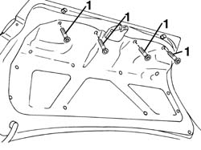
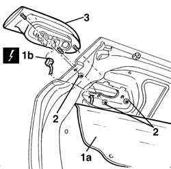
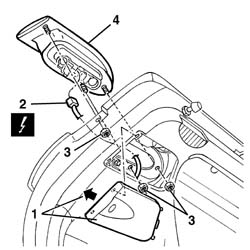

5540A68 l/h or r/h interior tail light (one) - r+r
- Path
- Procedures > 55 ELECTRICAL EQUIPMENT > 5540 EXTERIOR LIGHTING > 5540A lighting > 5540A68 l/h or r/h interior tail light (one) - r+r
- Kind
- repair procedure (removal / refitting; the operation number is the code)
- Applies to
- all engines; all production periods
- Interactive page
- https://sloeber94.github.io/elrnDB-a156/en/#/3238440
Applies to: all engines; all production periods
 Removing
Removing
 Refitting
Refitting1. Open the boot lid and undo the bolts fixing the inner lining.

Applies to: all engines; all production periods
1. Lower the inner cover (1a) and disconnect the electrical connection (1b).
 | Name | Connector |
|---|---|---|
1b | Left rear. light cluster on (moving section of boot) |
| Name | Connector |
|---|---|---|
1b | Rear lights cluster right (moving part on boot lid) |
2. Unscrew the nuts.
3. Remove the inner rear light.

Applies to: all engines; all production periods
Refitting
RemovingCheck that the light cluster is not damaged.
Refit the light, fixing it using the nuts.
Connect the electrical connection.
Reposition the inner trim and secure it using the bolts.
Check the operation of the reversing lights and rear fog lamps.
Applies to: all engines; all production periods; only with equipment: Station Wagon
Removing
RefittingOpen the tailgate.
1. Release the cover, moving it in the direction of the arrow.
2. Disconnect the electrical connections.
| Name | Connector |
|---|---|---|
2 | Left rear. light cluster on (moving section of boot) |
| Name | Connector |
|---|---|---|
2 | Rear lights cluster right (moving part on boot lid) |
3. Unscrew the nuts.
4. Remove the inner rear light.

Applies to: all engines; all production periods; only with equipment: Station Wagon
Refitting
RemovingCheck that the light cluster is not damaged.
Refit the light and fasten it using the nuts.
Connect the electrical connection
Check the operation of the reversing lights and the rear fog lamps.
Refit the cover.
Topics linked from this page (2)
- F35 Left rear. light cluster on (moving section of boot)
- F36 Rear lights cluster right (moving part on boot lid)